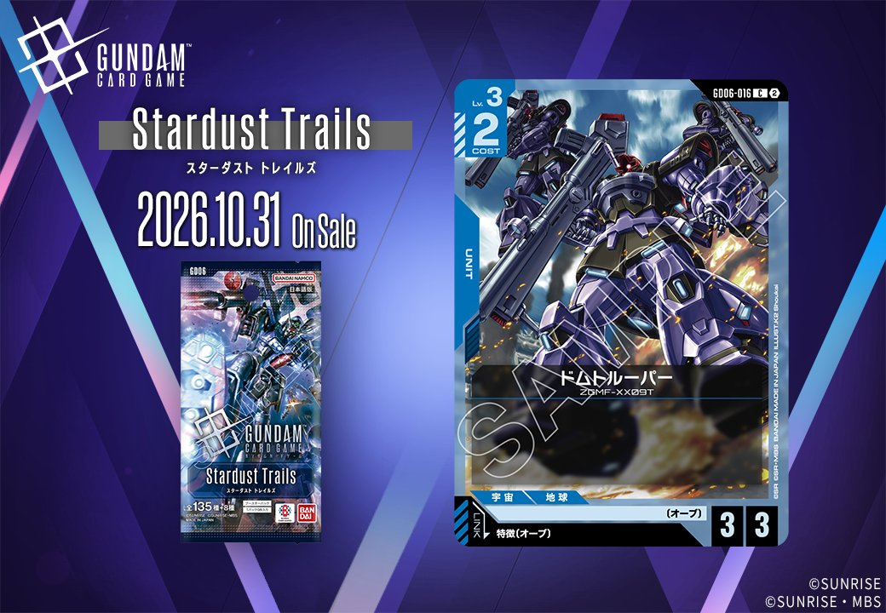
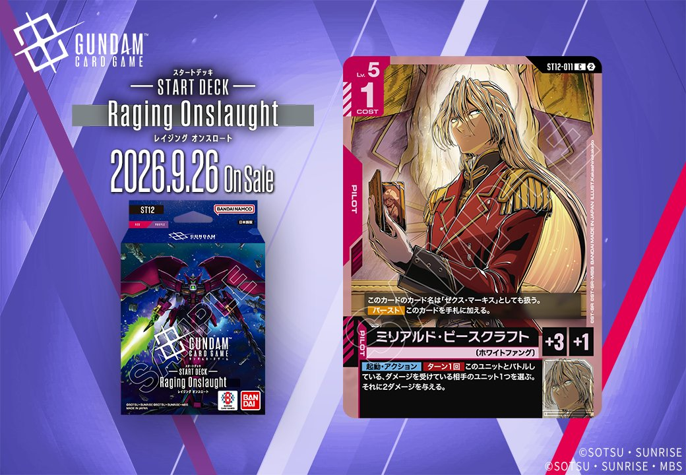

今回は青のUNIT「ドムトルーパー」(GD06-016、GD06収録)と、赤のPILOT「ミリアルド・ピースクラフト」(ST12-011、ST12収録)の2枚を取り上げます。ドムトルーパーは特徴にオーブを持つPILOTとのリンクを、ミリアルド・ピースクラフトは「ゼクス・マーキス」とのリンクを備えており、それぞれ発売日は2026年10月31日と2026年9月26日です。

ドムトルーパー (GD06-016)
| 色 | 青 | タイプ | UNIT |
| Lv | 3 | コスト | 2 |
| AP | 3 | HP | 3 |
| 特徴 | 〔オーブ〕 | ||
| リンク条件 | 特徴にオーブを持つPILOT | ||
ドムトルーパー(GD06-016)はCOST2でAP3/HP3という、効果を持たないバニラのLv.3ユニット。数値はコスト相応にまとまっており、序盤から中盤の盤面要員として扱いやすいスタッツです。 特徴〔オーブ〕を持ち、リンク条件も特徴にオーブを持つパイロットのため、キラ・ヤマト(GD05-081)を搭載すればその【リンク時】でこのユニットが〔オーブ〕であることを満たし、自分は1枚ドローできます。 2026-10-31発売。効果は持たないものの、オーブ特徴の頭数として組み込みやすい一枚です。



ミリアルド・ピースクラフト (ST12-011)
| 色 | 赤 | タイプ | PILOT |
| Lv | 5 | コスト | 1 |
| 補正 AP | 3 | 補正 HP | 1 |
| リンク条件 | 「ゼクス・マーキス」 | ||
効果: このカードのカード名は「ゼクス・マーキス」としても扱う。【バースト】このカードを手札に加える。【起動・アクション】ターン1回 このユニットとバトルしている、ダメージを受けている相手のユニット1つを選ぶ。それに2ダメージを与える。
COST1でAP3/HP1のパイロットで、リンク先は「ゼクス・マーキス」。カード名自体が「ゼクス・マーキス」としても扱われるため、リンク条件を満たしやすい点が便利です。 【起動・アクション】はバトル中かつダメージを受けている相手ユニットに2ダメージを与えるもので、追撃による撃破を狙える一方、バトル相手が既にダメージを受けている状況が前提となります。【バースト】で手札に戻る保険もあり、2026-09-26発売のST12収録カードです。


関連カード
-
 ストライクフリーダムガンダム(GD05-002)青系デッキ内採用率7.4% (331デッキ)
ストライクフリーダムガンダム(GD05-002)青系デッキ内採用率7.4% (331デッキ) -
 キラ・ヤマト(GD05-081)青系デッキ内採用率7.2% (325デッキ)
キラ・ヤマト(GD05-081)青系デッキ内採用率7.2% (325デッキ) -
 ストライクルージュ（オオトリ装備）(GD05-005)青系デッキ内採用率4.6% (206デッキ)
ストライクルージュ（オオトリ装備）(GD05-005)青系デッキ内採用率4.6% (206デッキ) -
 M1アストレイ（シュライク装備）(GD05-015)青系デッキ内採用率1.7% (78デッキ)
M1アストレイ（シュライク装備）(GD05-015)青系デッキ内採用率1.7% (78デッキ) -
 ストライクルージュ（キラ機）(GD05-010)青系デッキ内採用率0.9% (41デッキ)
ストライクルージュ（キラ機）(GD05-010)青系デッキ内採用率0.9% (41デッキ) -
 カガリ・ユラ・アスハ(GD01-096)白系デッキ内採用率0% (2デッキ)
カガリ・ユラ・アスハ(GD01-096)白系デッキ内採用率0% (2デッキ) -
 カガリ・ユラ・アスハ(GD01-096_p1)白系デッキ内採用率0% (0デッキ)
カガリ・ユラ・アスハ(GD01-096_p1)白系デッキ内採用率0% (0デッキ) -
 カガリ・ユラ・アスハ(GD01-096_p2)白系デッキ内採用率0% (0デッキ)
カガリ・ユラ・アスハ(GD01-096_p2)白系デッキ内採用率0% (0デッキ) -
カガリ・ユラ・アスハ(GD01-096_p3)白系デッキ内採用率0% (0デッキ)
-
キラ・ヤマト(GD05-081_p1)青系デッキ内採用率0% (0デッキ)